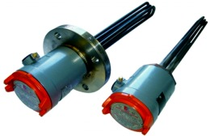
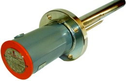
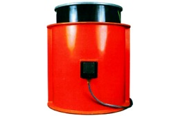
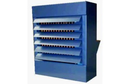
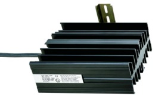

En industrias químicas, petroquímicas, procesos industriales, plataformas petrolíferas e instalaciones militares existen materiales que son almacenados, procesados o producidos en áreas donde la atmósfera es potencialmente explosiva y en las cuales se necesitan elementos calefactores antideflagrantes.
A partir de Julio del 2003 todos los equipos con puesta en servicio dentro de la Comunidad Europea han de cumplir por obligación con la Directiva Atex 94/9/CE. Todos los equipos expuestos en el presente documento están certificados en base a la Directiva Atex 94/9/CE.
Inmersión con tapón roscado RFA

Resistencia adecuada para la instalación en los tanques de proceso, las baños de seguridad, los colectores de aceite motor, recipientes de presión y equipos similares, situados en áreas peligrosas clasificadas como Zona 1 y Zona 2 donde la atmósfera inflamable es del grupo IIA, IIB o IIC. Adecuados para calentar líquidos o gases que no sean corrosivos a los materiales del calefactor.
Modelos estandarizados diversas medidas y potencias. Se pueden fabricar a medida.
Tapón roscado y vaina RFA-CS

Resistencia de inmersión con vaina e interior de cuerpo cerámico reemplazable. Proporciona una buena solución de áreas clasificadas para el calentamiento de aceite u otros procesos similares donde se requiere una baja densidad de carga. El elemento calefactor puede ser retirado para su inspección o remplazo sin necesidad de vaciar el depósito. La caja de conexiones EEx'd' protege las conexiones eléctricas de la atmósfera explosiva.
Modelos estandarizados diversas medidas y potencias. Se pueden fabricar a medida.
Calentadores de bidón

Para zonas con atmósferas potencialmente explosivas está diseñado para el calentamiento de bidones normalizados de 205 litros o pequeños depósitos de acero. El calentador de bidón HIDH está compuesto por una única bobina de inducción, la cual está encapsulada en un cilindro hecho con un material de resina de vidrio reforzado.
La ausencia completa de elementos calientes y la encapsulación de todos los componentes eléctricos permite su uso en áreas clasificadas Zonas 1 y 2.
El calentador de bidón HIDH está certificado ATEX Ex II 2 G/D EEx"e" IIC T3 (170 °C).
Convectores zonas clasificadas FAW
Elementos calefactores formados por elementos tubulares con aletas reemplazables individualmente. Certificado ATEX por LCIE Ex II 2 G EEx'e' IIC T2 a T4 , según EN 50014 y EN 50019
Caja de conexiones con grado de protección contra la humedad IP66 / IP67
Disponibles para clasificación de temperatura T2, T3 y T4.
Rango de temperatura de ambiente de -20 °C a +60 °C
Chasis en acero tratado o acero inoxidable. Caja de conexiones: Caja de aluminio con entrada para cables de Ø20 mm.
Modelos zonas clasificadas FUH

Esta gama de aerotermos eléctricos ofrecen una solución de calefacción de espacios donde se requieren una alta capacidad de calefacción. Están certificados para su uso en áreas clasificadas Zona 1 y Zona 2 donde la atmósfera inflamable es del grupo IIA, IIB o IIC.
Calefactores para armarios

Calefactores para armarios de distribución y maniobra CREX.
Elemento de calefacción cartucho de calefacción de máxima potencia. Tensión de alimentación 230 - 240 Vac
Radiador perfil de aluminio, anodizado negro. Conexión Si HF-JZ 3 x 0,75mm², 1m de largo
Fijación clip para carril de 35mm DIN, EN 50022. Posición de montaje vertical
Grado / Clase de protección IP 65 / I (conductor de protección)
Protección contra explosión LCIE. Homologaciones EX CE. Protección contra explosión LCIE 01 ATEX 6073
Aerotermo Industrial ATEX
Aerotermo portátil de aire caliente, gama MFH, para áreas peligrosas clasificadas ATEX.
Adecuado para temperaturas ambiente de -40°C hasta +40°C. Versiones en 6KW y 3KW